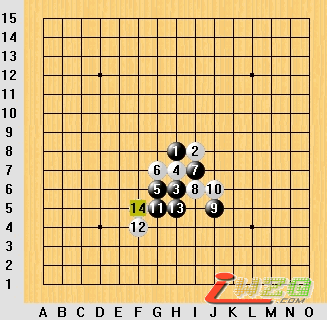
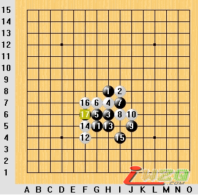
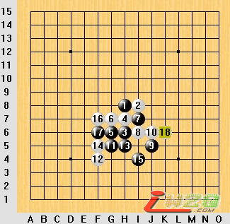
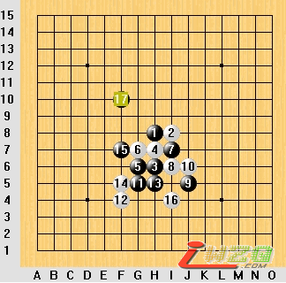
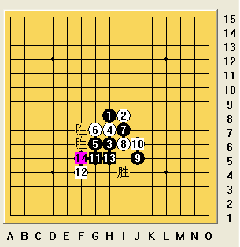

寒星通金星的一个变化之我见
#1 寒星通金星的一个变化之我见作者：逆刃 发表时间：2007-4-14 19:12:47
彭建国老师编著的《五子棋选点诀窍》里介绍了寒星的基本定式.其中说到了一个黑5的必胜变化.而这个变化到18手的时候彭老师只讲了一个强防就草草收尾,而我在研究的时候发现白18手还存在另一个强防,经过一个下午的研究,我认为这个强防让黑棋无法必胜.同时发现了黑棋必胜的另一手段.拿出来讲讲希望大家给予指正!
如下图,白14强防.

书上说黑棋15手应该在I4处活三,然后白显然只有在F7处防守,黑17手自然下于F6,于是有下图:

书上讲到白18防于H3是最强防然后黑可以取胜.的确当白18手下在H3处时黑是可以胜的,但书上省略了18手下在K6的强防,这个18才是最强!这样黑无法胜,感兴趣的朋友可以研究下.

那么,难道有了这个18后黑就无法胜了吗?其实不然,如果黑15手在F7处活三黑是可以胜的.如下图,黑15手后白16只有防于I4(防E8点黑能轻松胜).黑17手在F10做棋(这个黑17手非常好).

这样黑棋就必胜了,也证明了这个黑7是必胜的,以及这个黑5也是必胜的.如果按照书上的定式行棋是行不通的.如上,白棋下面虽有活棋却无用,白18在G9是强防,黑19手在G11又一绝妙的做棋让白棋无法防守.
其中有些变化还是比较复杂的,比如白18强防后黑为什么不能取胜,以及黑正确的取胜方法17手后白各种防守黑怎样下才能胜,还得靠大家自己研究了.
［ 有志青年 于 2007-4-17 20:29:34 时奖励此帖[金币加 20 威望加1］
#2 Re:寒星通金星的一个变化之我见作者：逆刃 发表时间：2007-4-17 21:35:54
谢谢有志了啊，以后我会努力的。呵呵·！#3 Re:寒星通金星的一个变化之我见作者：renji 发表时间：2007-4-25 9:22:12
研究得精妙透彻。#4 Re:寒星通金星的一个变化之我见作者：gerbo 发表时间：2007-4-25 22:44:31
好样的～～这么好的帖子哪里找哈，感觉您的无偿奉献，我代表湖南人民感觉您～
#5 Re:寒星通金星的一个变化之我见作者：无尽 发表时间：2007-4-27 14:34:47
18K6后黑也胜，书中的结论没错#6 Re:寒星通金星的一个变化之我见作者：海天之轮 发表时间：2007-4-28 9:10:29
无尽说得没错，第三图18-K6后黑仍然有简单胜。
要严格得出黑无法必胜的结论，必须：
1 证明白必胜
或
2 地毯所有双方无胜的攻击点到满盘
第二点几乎是无法实现的，因此要证明黑无法必胜，几乎必须要证明白必胜才行。
在有些情况下，虽然也无法证明白必胜，但黑棋确实没有任何进攻的方法了。如全盘空间已经很小，黑棋连活2眠3也没有，那么虽然没有地毯到满盘，说黑无法必胜也可以接受。但图三中的情况，黑攻击点非常多。
研究中，暂时找不到杀的情况很常见，杀不掉的变化可以存疑。而只试了几种方法没杀出来，就得出黑无法必胜的结论是武断的。
#7 Re:寒星通金星的一个变化之我见作者：逆刃 发表时间：2007-4-28 12:39:09
楼上两位说得都有道理，谢谢你们的意见。希望各位多给予指点，共同进步！
#8 Re:寒星通金星的一个变化之我见作者：海天之轮 发表时间：2007-4-28 13:15:00
确实是黑简单胜，逆刃看看有什么问题：
19在E7活3，白挡上则G2，白挡下则G9
#9 Re:寒星通金星的一个变化之我见作者：有志青年 发表时间：2007-4-28 13:26:06
发互动谱的时候，由设计方式转换为代码方式，粘贴好代码后，直接发布，不能切换到设计或预览模式下。
#10 Re:寒星通金星的一个变化之我见作者：海天之轮 发表时间：2007-4-28 13:28:09
#11 Re:寒星通金星的一个变化之我见作者：逆刃 发表时间：2007-4-28 14:12:04
楼上的见解正确!19手我疏忽了,真是一大失误!不过当白在下面防守时变化还是很多的哦!21手的那个型和我所说的必胜是一样的,
这样胜似乎要更简单些!,谢谢指正!
#12 Re:寒星通金星的一个变化之我见作者：无尽 发表时间：2007-4-28 18:45:38
19-24更直接 VCT 不用做棋 胜法不少 呵#13 Re:寒星通金星的一个变化之我见作者：空龙 发表时间：2007-5-2 0:43:48
黑15下F7;F6;I4都可必胜
#14 Re:寒星通金星的一个变化之我见作者：空龙 发表时间：2007-5-2 1:19:28
#15 Re:Re:寒星通金星的一个变化之我见作者：sheal 发表时间：2007-7-6 17:24:41
引用：
原文由 无尽 发表于 2007-4-28 18:45:38 :
19-24更直接 VCT 不用做棋 胜法不少 呵
24就是I13么?互动谱里就一个24
给个互动谱看看吧.我喜欢VCT的
#16 Re:寒星通金星的一个变化之我见作者：鬼手 发表时间：2008-1-8 18:45:52
阅！18K6后黑可胜#17 Re:寒星通金星的一个变化之我见作者：lfzxdh 发表时间：2008-3-29 10:57:10
哈哈，学习了，谢谢楼主啊，一起进步，嘿嘿
#18 Re:寒星通金星的一个变化之我见作者：米 发表时间：2008-11-18 8:54:02
这个变化黑9布在E7可胜，如果白10=G5，则黑11=E6，如果白10=G8，则黑11=J5。另外即使是与前八手相似离盘端差两路，相似E7的黑9也可胜。